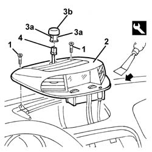

5010D56 solar sensor - r r after checking electrical system
- Path
- Procedures > 50 AUXILIARY UNITS > 5010 CLIMATE CONTROL - MISCELLANEOUS > 5010D air temperature recording system > 5010D56 solar sensor - r r after checking electrical system
- Kind
- repair procedure (removal / refitting; the operation number is the code)
- Applies to
- all engines; all production periods
- Interactive page
- https://sloeber94.github.io/elrnDB-a156/en/#/3238272
Applies to: all engines; production: da 03/02 a 09/03, da 10/03
 Removing
Removing
 Refitting
Refitting1. Undo the bolts
2. Using the special tool, release the centre vent complete with Infocenter from the housing.
 | Name | Country |
|---|---|---|
1 | Scraper blade | 1.823.014.000 |
3. Release the retainers (3a) for the radiation sensor (3b) pushing from underneath.
4. Disconnect the electrical connection and recover the sensor.

Applies to: all engines; production: da 03/02 a 09/03, da 10/03
Refitting
RemovingCheck that the sensor is not damaged.
Connect the sensor electrical connection.
Fit the sensor in place engaging the retainers.
Place the centre vent in positino and secure it using the bolts.
Check the operation of the system using the Examiner or the other diagnostic equipment.